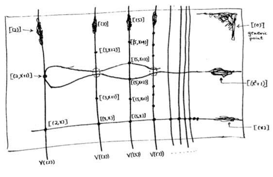

To cement in the previous two chapters, we now give an enormous list of examples. Each example gets its own section, rather than having page-long orange boxes.
One common theme you will find as you wade through the examples is that your geometric intuition may be better than your algebraic one. For example, while studying you will say “geometrically, I expect so-and-so to look like other thing”, but when you write down the algebraic statements you find two expressions that are don’t look equal to you. However, if you then do some calculation you will find that they were isomorphic after all. So in that sense, in this chapter you will learn to begin drawing pictures of algebraic statements — which is great!
As another example, all the lemmas about prime ideals from our study of localizations will begin to now take concrete forms: you will see many examples that
looks like of ,
looks like of ,
looks like of .
In everything that follows, is any field. We will also use the following color connotations:
The closed points of the scheme are drawn in blue.
Non-closed points are drawn in red, with their “trails” dotted red.
Stalks are drawn in green, when they appear.
This one is easy: for any field , has a single point, corresponding to the only proper ideal . There is only way to put a topology on it.
As for the sheaf,
So the space is remembering what field it wants to be over. If we are complex analysts, the set of functions on a single point is ; if we are number theorists, maybe the set of functions on a single point is .
The scheme is our beloved one-dimensional line. It consists of two types of points:
The closed points , corresponding to each complex number , and
The generic point .
As for the Zariski topology, every open set contains , which captures the idea it is close to everywhere: no matter where you stand, you can still hear the buzzing of the fly! True to the irreducibility of this space, the open sets are huge: the proper closed sets consist of finitely many closed points.
Here is a picture: for lack of better place to put it, the point is floating around just above the line in red.
ΨΨsize(8cm);
ΨΨpair A = (-8,0); pair B = (8,0);
ΨΨdraw(A--B, blue, Arrows);
ΨΨdot("$(x)$", (0,0), dir(-90), blue);
ΨΨdot("$(x-3)$", (3,0), dir(-90), blue);
ΨΨdot("$(x+i)$", (-4,0), dir(-90), blue);
ΨΨdot("$(0)$", (0,1), dir(90), red);
ΨΨdraw( (-6,0)..(-3,0.5)..(-1,1)--(1,1)--(3,0.5)--(6,0), dotted+red );
ΨΨlabel("$\operatorname{Spec} \mathbb C[x]$", A, dir(-90), blue);
Ψ
The notion of “value at ” works as expected. For example, is a global section of . If we evaluate it at , we find . Indeed,
meaning the stalks all have residue field . As
we see we are just plugging .
Of course, the stalk at carries more information. In this case it is . Which means that if we stand near the point , rational functions are all fine as long as no appears in the denominator. So, is a fine example of a germ near .
Things get more interesting if we consider the generic point .
What is the stalk ? Well, it should be , which is the again the set of rational functions. And that’s what you expect. For example, certainly describes a rational function on “most” complex numbers.
What happens if we evaluate the global section at ? Well, we just get — taking modulo doesn’t do much. Fitting, it means that if you want to be able to evaluate a polynomial at a general complex number, you actually just need the whole polynomial (or rational function). We can think of this in terms of the residue field being :
Despite appearances, this actually looks almost exactly like , even more than you expect. The main thing to keep in mind is that now is a point, which you can loosely think of as . So it almost didn’t matter that is not algebraically closed; the is showing through anyways. But this time, because we only consider real coefficient polynomials, we do not distinguish between “conjugate” and . Put another way, we have folded and into a single point: and merge to form .
To be explicit, there are three types of points:
for each real number
if , and
the generic point , again.
The ideals and are each closed points: the quotients with are both fields ( and , respectively).
We have been drawing as a one-dimensional line, so will be drawn the same way.
ΨΨsize(8cm);
ΨΨpair A = (-8,0); pair B = (8,0);
ΨΨdraw(A--B, blue, Arrows);
ΨΨdot("$(x)$", (0,0), dir(-90), blue);
ΨΨdot("$(x-3)$", (3,0), dir(-90), blue);
ΨΨdot("$(x^2+1)$", (-4,0), dir(-90), blue);
ΨΨdot("$(0)$", (0,1), dir(90), red);
ΨΨdraw( (-6,0)..(-3,0.5)..(-1,1)--(1,1)--(3,0.5)--(6,0), dotted+red );
ΨΨlabel("$\operatorname{Spec} \mathbb R[x]$", A, dir(-90), blue);
Ψ
One nice thing about this is that the nullstellensatz is less scary than it was with classical varieties. The short version is that the function vanishes at a point of , namely itself! (So in some ways we’re sort of automatically working with the algebraic closure.)
You might remember a long time ago we made a big fuss about the weak nullstellensatz, for example in 77C: if was a proper ideal in there was some point such that for all . With schemes, it doesn’t matter anymore: if is a proper ideal of a ring , then some maximal ideal contains it, and so is nonempty in .
We better mention that the stalks this time look different than expected. Here are some examples:
Notice the residue fields above the “complex” points are bigger: functions on them take values in .
In general, if is the algebraic closure of , then looks like with all the Galois conjugates glued together. So we will almost never need “algebraically closed” hypotheses anymore: we’re working with polynomial ideals, so all the elements are implicitly there, anyways.
The great thing about is that it basically looks like , too, being a one-dimensional scheme. It has two types of prime ideals:
, for every rational prime ,
and the generic point .
So the picture almost does not change.
ΨΨsize(8cm);
ΨΨpair A = (-8,0); pair B = (8,0);
ΨΨdraw(A--B, blue, Arrows);
ΨΨdot("$(7)$", (0,0), dir(-90), blue);
ΨΨdot("$(3)$", (3,0), dir(-90), blue);
ΨΨdot("$(19)$", (-4,0), dir(-90), blue);
ΨΨdot("$(0)$", (0,1), dir(90), red);
ΨΨdraw( (-6,0)..(-3,0.5)..(-1,1)--(1,1)--(3,0.5)--(6,0), dotted+red );
ΨΨlabel("$\operatorname{Spec} \mathbb Z$", A, dir(-90), blue);
Ψ
This time has stalk , so a “rational function” is literally a rational number! Thus, is a function with a double root at , a root at , and a simple pole at . If we evaluate it at , we get . In general, the residue fields are what you’d guess:
for each prime , and .
The stalk is bigger than the residue field at the closed points: for example
consists of rational numbers with no pole at . The stalk at the generic point is .
If we were working with affine varieties, you would already know what the answer is: has solutions and , so this should be a scheme with two points.
To see this come true, we use Proposition 83.6.1: the points of should correspond to prime ideals of containing . As is a PID, there are only two, and . They are each maximal, since their quotient with is a field (namely ), so as promised has just two closed points.
Each point has a stalk above it isomorphic to . A section on the whole space is just a choice of two values, one at and one at .
Ψsize(4cm);
Ψdraw("$k$", (-2,0)--(-2,5), dir(180), heavygreen);
Ψdraw("$k$", (2,0)--(2,5), heavygreen);
Ψdot("$(x-3)$", (-2,0), dir(-90), blue);
Ψdot("$(x-4)$", (2,0), dir(-90), blue);
Ψlabel("$\operatorname{Spec} k[x]/(x^2-7x+12)$", (0,5), 2*dir(90));
So actually, this is a geometric way of thinking about the ring-theoretic fact that
Also, this is the first example of a reducible space in this chapter: in fact is even disconnected. Accordingly there is no generic point floating around: as the space is discrete, all points are closed.
We can now elaborate on the “double point” scheme
since it is such an important motivating example. How it does differ from the “one-point” scheme ? Both and have exactly one point, and so obviously the topologies are the same too.
The difference is that the stalk (equivalently, the section, since we have only one point) is larger:
So to specify a function on a double point, you need to specify two parameters, not just one: if we take a polynomial
then evaluating it at the double point will remember both and the “first derivative” say.
I should mention that if you drop all the way to the residue fields, you can’t tell the difference between the double point and the single point anymore. For the residue field of at is
Thus the set of values is still just (leading to the “nilpotent” discussion at the end of last chapter); but the stalk, having “enriched” values, can tell the difference.
There is no problem putting the previous two examples side by side: the scheme consists of a double point next to a single point. Note that the stalks are different: the one above the double point is larger.
Ψsize(5cm);
Ψdraw("$k[x] / (x^2)$", (-2,0)--(-2,7), dir(180), heavygreen);
Ψdraw("$k$", (2,0)--(2,5), heavygreen);
Ψdot("$(x)$", (-2,0), dir(-90), blue+5);
Ψdot("$(x-5)$", (2,0), dir(-90), blue);
Ψlabel("$\operatorname{Spec} k[x]/(x^3-5x^2)$", (0,7), 2*dir(90));
This time, we implicitly have the ring isomorphism
by . The derivative is meant formally here!
We’ve being seeing geometric examples of ring products coming up, but actually the Chinese remainder theorem you are used to with integers is no different. (This example is taken from [ref:vakil, §4.4.11].)
By Proposition 83.6.1, the prime ideals of are , , . But you can think of this also as coming out of : as was a function with a double root at , and single roots at and .
Ψsize(6cm);
Ψdraw("$\mathbb Z / 4 \mathbb Z$", (-2,0)--(-2,7), dir(180), heavygreen);
Ψdraw("$\mathbb Z / 3 \mathbb Z$", (0,0)--(0,5), heavygreen);
Ψdraw("$\mathbb Z / 5 \mathbb Z$", (2,0)--(2,6), heavygreen);
Ψdot("$(2)$", (-2,0), dir(-90), blue+5);
Ψdot("$(3)$", ( 0,0), dir(-90), blue);
Ψdot("$(5)$", ( 2,0), dir(-90), blue);
Ψlabel("$\operatorname{Spec} \mathbb Z / 60 \mathbb Z$", (0,7), 2*dir(90));
Actually, although I have been claiming the ring isomorphisms, the sheaves really actually give us a full proof. Let me phrase it in terms of global sections:
So the theorem that for is doing the “work” here; the sheaf axioms then give us the Chinese remainder theorem from here.
On that note, this gives us a way of thinking about the earlier example that
Indeed, is supposed to look like the distinguished open set : which means we delete the point from the picture above. That leaves us with .
We have seen this scheme already: it is visualized as a plane. There are three types of points:
The closed points , which consists of single points of the plane.
A non-closed point for any irreducible polynomial , which floats along some irreducible curve. We illustrate this by drawing the dotted curve along which the point is floating.
The generic point , floating along the entire plane. I don’t know a good place to put it in the picture, so I’ll just put it somewhere and draw a dotted circle around it.
Here is an illustration of all three types of points.
Ψreal f(real x) { return x*x; }
Ψgraph.xaxis("$x$");
Ψgraph.yaxis("$y$");
Ψdraw(graph(f,-2,2,operator ..), red+dotted, Arrows(TeXHead));
Ψdot("$(y-x^2)$", (1.3, f(1.3)), dir(-45), red);
Ψdot("$(x-1,y+2)$", (1,-2), dir(-45), blue);
Ψpair O = (-3,3);
Ψdot("$(0)$", O, dir(225), red);
Ψfilldraw(CR(O, 0.8), opacity(0.2)+lightred, dotted+red);
We also go ahead and compute the stalks above each point.
The stalk above is the set of rational functions such that .
The stalk above the non-closed point is the set of rational functions such that . For example the function is still fine; despite the fact that the denominator vanishes at the point and on the parabola, it is a function on a “generic point” (crudely, “most points”) of the parabola.
The stalk above is the entire fraction field of rational functions.
Let’s consider the global section and also take the value at each of the above points.
, so has value at .
The new bit is that we can think of evaluating along the parabola too — it is given a particular value in the quotient . We can think of it as for example. Note that if we know the value of at the generic point of the parabola, we can therefore also evaluate it at any closed point on the parabola.
At the generic point , . So “evaluating at the generic point” does nothing, as in any other scheme.
We saw looked a lot like , and we will now see that looks a lot like .
There is a famous picture of this scheme in Mumford’s “red book”, which I will produce here for culture-preservation reasons, even though there are some discrepancies between the pictures that we previously drew.
Mumford uses to denote the point , which we don’t, so you can ignore the square brackets that appear everywhere. The non-closed points are illustrated as balls of fuzz.
As before, there are three types of prime ideals, but they will look somewhat more different:
The closed points are now pairs where is a prime and is an irreducible polynomial modulo . Indeed, these are the maximal ideals: the quotient becomes some finite extension of .
There are now two different “one-dimensional” non-closed points:
Each rational prime gives a point and
Each irreducible polynomial gives a point .
Indeed, note that the quotients of by each are integral domains.
is an integral domain, so as always is our generic point for the entire space.
There is one bit that I would do differently, in and , there ought to be a point , which is not drawn as a closed point in the picture, but rather as dashed oval. This is not right in the topological sense: as is a maximal ideal, so it really is one closed point in the scheme. But the reason it might be thought of as “doubled”, is that , the residue field at , is a two-dimensional vector space.
By Proposition 83.6.1, the prime ideals of correspond to the prime ideals of which are supersets of , or equivalently the points of contained inside the closed set . Moreover, the subspace topology on coincides with the topology on .
Ψreal f(real x) { return x*x; }
Ψdraw(graph(f,-2,2,operator ..), blue, Arrows(TeXHead));
Ψlabel("$\operatorname{Spec} k[x,y]/(y-x^2)$", (0, f(0)), dir(-90), blue);
This holds much more generally:
Show that if is an ideal of a ring , then is homeomorphic as a topological space to the closed subset of .
So this is the notion of “closed embedding”: the parabola, which was a closed subset of , is itself a scheme. It will be possible to say more about this, once we actually define the notion of a morphism.
The sheaf on this scheme only remembers the functions on the parabola, though: the stalks are not “inherited”, so to speak. To see this, let’s compute the stalk at the origin: Theorem 83.7.1 tells us it is
which is the same as the stalk of the affine line at the origin. Intuitively, not surprising; if one looks at any point of the parabola near the origin, it looks essentially like a line, as do the functions on it.
The stalk above the generic point is : so rational functions, with the identification that . Also unsurprising.
Finally, we expect the parabola is actually isomorphic to , since there is an isomorphism by sending . Pictorially, this looks like “un-bending” the hyperbola. In general, we would hope that when two rings and are isomorphic, then and should be “the same” (otherwise we would be horrified), and we’ll see later this is indeed the case.
You can play on this idea some more in the integer case. Note that
which means this is a “dimension-one” closed set within . In this way, we get a scheme whose elements are Gaussian primes.
You can tell which closed points are “bigger” than others by looking at the residue fields. For example the residue field of the point is
but the residue field of the point is
which is a degree two -extension.
This is going to be our first example of a non-irreducible scheme.
Like before, topologically it looks like the closed set of . Here is a picture:
Ψdraw( (-4,0)--(4,0), blue, Arrows);
Ψdraw( (0,-4)--(0,4), blue, Arrows);
Ψdot("$(x)$", (0.3,3), dir(-45), lightred);
Ψdot("$(y)$", (3, 0.3), dir(135), lightred);
Ψdraw( (0.3,3.6)--(0.3,2.4), lightred+dotted );
Ψdraw( (2.4,0.3)--(3.6,0.3), lightred+dotted );
Ψdot("$(x+2)$", (-2,0), dir(-90), blue);
Ψdot("$(y+3)$", (0,-3), dir(0), blue);
To make sure things are making sense:
Verify that is really a maximal ideal of lying in .
The ideal is longer prime, so it is not a point of this space. Rather, there are two non-closed points this time: the ideals and , which can be visualized as floating around each of the two axes. This space is reducible, since it can be written as the union of two proper closed sets, . (It is still connected, as a topological space.)
Consider the distinguished open set . This corresponds to deleting , the -axis. Therefore we expect that “is” just with the origin deleted, and in particular that we should get for the sections. Indeed,
where follows from being a unit. Everything as planned.
Let’s compute the stalk above the point , which we think of as the point on the -axis. (If it makes you more comfortable, note that and hence , so we could also write .) The stalk is
But I claim that becomes the zero element with this localization. Indeed, we have . Hence the entire thing collapses to just
which anyways is the stalk of in . That’s expected. If we have a space with two lines but we’re standing away from the origin, then the stalk is not going to pick up the weird behavior at that far-away point; it only cares about what happens near , and so it looks just like an affine line there.
Note that is not the same as ; the order matters here. In fact, the latter is the zero ring, since both and , and hence , are units.
The generic point (which floats around the -axis) will tell a similar tale: if we look at the stalk above it, we ought to find that it doesn’t recognize the presence of the -axis, because “nearly all” points don’t recognize it either. To actually compute the stalk:
Again , so this is just
which is what we expected (it is the same as the stalk above in ).
The stalk above the origin is interesting, and has some ideas in it we won’t be able to explore fully without talking about localizations of modules. The localization is given by
and hence the elements should be
where .
You might feel unsatisfied with this characterization. Here is some geometric intuition. You can write the global section ring as
meaning any global section is the sum of an -polynomial and a -polynomial. This is not just the ring product , though; the constant term is shared. So it’s better thought of as pairs of polynomials in and which agree on the constant term.
If you like category theory, it is thus a fibered product
with morphism and by sending and to zero. In that way, we can mostly decompose into its two components.
We really ought to be able to do the same as the stalk: we wish to say that
English translation: a “typical” germ ought to look like , with the and parts decoupled. Equivalently, the stalk should consist of pairs of -germs and -germs that agree at the origin.
In fact, this is true! This might come as a surprise, but let’s see why we expect this. Suppose we take the germ
If we hold our breath, we could imagine expanding it as a geometric series: . As , this just becomes . This is nonsense (as written), but nonetheless it suggests the conjecture
which you can actually verify is true.
Check this identity holds.
Of course, this is a lot of computation just for one simple example. Is there a way to make it general? Yes: the key claim is that “localization commutes with limits”. You can try to work out the statement now if you want, but we won’t do so.
This is supposed to look like of , or the line with the origin deleted it. Alternatively, we could also write
so that the scheme could also be drawn as a hyperbola.
First, here’s the 1D illustration.
ΨΨsize(8cm);
ΨΨpair A = (-8,0); pair B = (8,0);
ΨΨdraw(A--B, blue, Arrows);
ΨΨdot("$(x-3)$", (3,0), dir(-90), blue);
ΨΨdot("$(x+2)$", (-2,0), dir(-90), blue);
ΨΨdot("$(0)$", (0,1), dir(90), red);
ΨΨopendot(origin, blue+1.5);
ΨΨdraw( (-6,0)..(-3,0.5)..(-1,1)--(1,1)--(3,0.5)--(6,0), dotted+red );
ΨΨlabel("$\operatorname{Spec} k[x,x^{-1}]$", A, dir(-90), blue);
Ψ
We actually saw this scheme already when we took and looked at , too. Anyways, let us compute the stalk at now; it is
since is in anyways. So again, we see that the deletion of the origin doesn’t affect the stalk at the farther away point .
As mentioned, since is isomorphic to , another way to draw the visualize the same curve would be to draw the hyperbola (which you can imagine as flattening to give the punctured line.) There is one generic point since really is an integral domain, as well as points like .
ΨΨsize(7cm);
ΨΨimport graph;
ΨΨgraph.xaxis("$x$", -4, 4);
ΨΨgraph.yaxis("$y$", -4, 4);
ΨΨreal f (real x) { return 1/x; }
ΨΨdraw(graph(f,-4,-0.25,operator ..), blue);
ΨΨdraw(graph(f,0.25,4,operator ..), blue);
ΨΨlabel("$\operatorname{Spec} k[x,y] / (xy-1)$", (1,1), dir(45), blue);
ΨΨdot("$(0)$", (0.4,2), dir(225), red);
ΨΨfilldraw(CR( (0.4,2), 0.3 ), opacity(0.1)+lightred, red+dotted);
ΨΨdot("$(x+2)$", (-2, f(-2)), dir(10), blue);
Ψ
We know already that : so should be the stalk at . In this example we will see that should be drawn sort of as this stalk, too.
We saw earlier how to draw a picture of . You can also draw a picture of the stalk above the origin , which you might visualize as a grass or other plant growing above if you like agriculture. In that case, might look like what happens if you pluck out that stalk from the affine line.
ΨΨunitsize(0.7cm);
ΨΨpair A = (-5,0); pair B = (5,0);
ΨΨdraw(A--B, blue, Arrows);
ΨΨdraw( (-4,0)..(-2,0.5)..(-1,1)--(1,1)--(2,0.5)--(4,0), dotted+red );
ΨΨlabel("$\operatorname{Spec} k[x]$", A, dir(-90), blue);
ΨΨdraw( (0,0)--(0,3), heavygreen);
ΨΨlabel("$\mathcal O_{\operatorname{Spec} k[x], (x)}$", (0,3), dir(90), heavygreen);
ΨΨdot("$(x)$", (0,0), dir(-90), blue);
ΨΨdot("$(0)$", (0.2,1), dir(45), red);
ΨΨadd(shift(-9,0)*CC());
ΨΨdraw("pluck", (-4.5, 1.5)--(-1.5,1.5), dir(90), black, EndArrow(TeXHead));
ΨΨ// now the stalk
ΨΨdraw( (0,0)--(0,3), heavygreen);
ΨΨlabel("$\operatorname{Spec} k[x]_{(x)}$", (0,3), dir(90), blue);
ΨΨdraw( (-1,1)--(1,1), dotted+red );
ΨΨdot("$(0)$", (0.2,1), dir(45), red);
ΨΨdot("$(x)$", (0,0), dir(-90), blue);
Ψ
Since is a local ring (it is the localization of a prime ideal), this point has only one closed point: the maximal ideal . However, surprisingly, it has one more point: a “generic” point . So is a two-point space, but it does not have the discrete topology: is a closed point, but is not. (This makes it a nice counter-example for exercises of various sorts.)
So, topologically what’s happening is that when we zoom in to , the generic point (which was “close to every point”) remains, floating above the point .
Note that the stalk above our single closed point is the same as it was before:
Indeed, in general if is a local ring with maximal ideal , then : since every element was invertible anyways. Thus in the picture, the stalk is drawn the same.
Similarly, the stalk above is the same as it was before we plucked it out:
More generally:
Let be a ring, and prime ideals. Check that , where we view as a prime ideal of .
So when we zoom in like this, all the stalks stay the same, even above the non-closed points.
The situation is more surprising if we pluck the stalk above the origin of , the two-dimensional plane. The points of are supposed to be the prime ideals of which are contained in ; geometrically these are and the generic points passing through the origin. For example, there will be a generic point for the parabola contained in , and another one corresponding to a straight line, etc.
So we have the single closed point sitting at the bottom, and all sorts of “one-dimensional” generic points floating above it: lines, parabolas, you name it. Finally, we have , a generic point floating in two dimensions, whose closure equals the entire space.
ΨΨsize(6cm);
ΨΨdraw( (0,0)--(0,3), heavygreen);
ΨΨlabel("$\operatorname{Spec} k[x,y]_{(x,y)}$", (0,3), dir(90), blue);
ΨΨdraw( (-1,0.1)--(1,1.1), dotted+red );
ΨΨdot("$(3x-2y)$", (0.4,0.8), dir(-45), red);
ΨΨpath p1 = (-0.5,2.5)..(0,2)..(0.5,2.5);
ΨΨdraw(p1, dotted+red);
ΨΨdot("$(y-x^2)$", relpoint(p1,0.3), dir(200), red);
ΨΨpath p2 = (-1,1.3)..(-0.5,1.8)..(0,1.6)..(0.5,1.4)..(1,1.9);
ΨΨdraw(p2, dotted+red);
ΨΨdot("$(2y-x^3)$", relpoint(p2,0.7), dir(-45), red);
ΨΨdot("$(x,y)$", (0,0), dir(-90), blue);
ΨΨdot("$(0)$", (1.5,2.5), dir(225), red);
ΨΨfilldraw(CR( (1.5,2.5), 0.5 ), opacity(0.1)+lightred, red+dotted);
Ψ
The generic point of the plane just has stalk : which is the spectrum of a field, hence a single point. The stalk remains intact as compared to when planted in ; the functions are exactly rational functions in and .
Draw a picture of , describe the topology, and compute the stalk at each point.
Draw a picture of , describe the topology, and compute the stalk at each point.
Let . Draw a picture of . Show that it is not connected as a topological space.
Let . Draw a picture of .